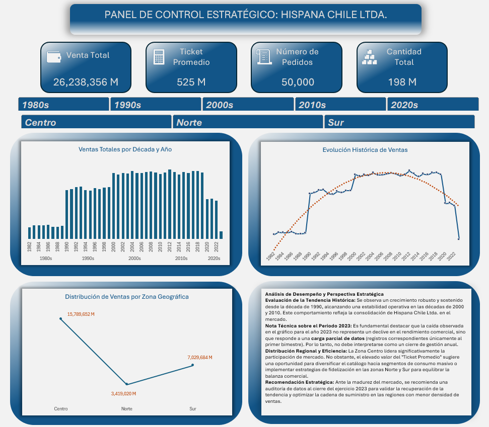

Project 11 – Hispana Chile Ltda. Strategic Sales Dashboard (Excel)
⭐ 5-Star Fiverr Project — Real Data

Description
This dashboard was built for a real student project using actual sales data from Hispana Chile Ltda., a Chilean company with over 40 years of commercial history. The goal was to transform raw transactional records into a strategic decision-support panel — and the result earned a 5-star review on Fiverr.
What does this dashboard deliver?
- A headline summary of key business metrics: Total Sales (26,238,356 M), Average Ticket (525 M), Number of Orders (50,000) and Total Quantity (198 M) — giving an instant view of the company's commercial scale.
- A total sales by decade and year bar chart spanning from the 1980s to the 2020s, revealing long-term growth, peak periods and the 2023 partial-data dip (correctly noted as a data completeness issue, not a business decline).
- A historical sales evolution line chart with trend projection, showing the company's growth trajectory and the inflection points across decades.
- A geographic distribution line chart comparing Centro (15,789,652 M), Norte (3,419,020 M) and Sur (7,029,684 M) regions — making the dominance of the Centro region immediately visible.
- A written strategic performance analysis embedded directly in the dashboard — including a technical note on the 2023 data anomaly and actionable recommendations for the Norte and Sur regions.
- Interactive slicers for decade (1980s–2020s) and region (Centro, Norte, Sur) — all charts update dynamically.
In short: this is a real-data project that demonstrates the ability to handle historical business data, communicate findings clearly in the client's language (Spanish), and deliver strategic insight — not just charts.
Recommendations (from the Dashboard)
- The high Average Ticket value suggests an opportunity to diversify the product catalogue toward mass-market segments.
- Implement loyalty and retention strategies in Norte and Sur regions to rebalance the heavy Centro dominance.
- Conduct a full data audit for the 2023 fiscal year to confirm whether the apparent decline is a data completeness issue or a genuine commercial signal.
- Leverage the 2000s–2010s stability period as a benchmark to identify which conditions drove consistent growth and replicate them.
Technical Details (for Data Analysts / Recruiters)
- Tool: Microsoft Excel
- Language: Spanish (delivered in client's language)
- Data: Real sales data — Hispana Chile Ltda., 1982–2023
- Client: Student project via Fiverr — ⭐ 5-star review received
Dashboard Components:
- KPI Cards (4 metrics): Total Sales, Average Ticket, Number of Orders, Total Quantity
- Sales by Decade & Year (Bar Chart): full 40-year historical view with decade grouping
- Historical Sales Evolution (Line Chart): trend line with projection overlay
- Geographic Distribution (Line Chart): Centro vs Norte vs Sur sales comparison
- Embedded Strategic Analysis: written commentary with technical notes and recommendations
- Interactive Slicers: Decade (1980s–2020s) and Region (Centro, Norte, Sur)